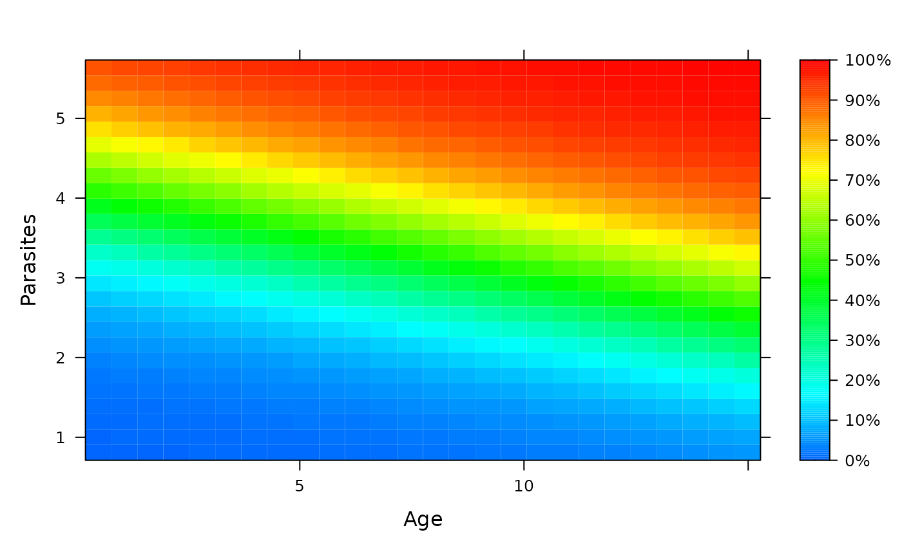

Level plots for predicted risks
Usage
riskLevelPlot(
object,
formula,
data = parent.frame(),
horizon = NULL,
cause = 1,
...
)Arguments
- object
risk prediction model object
- formula
formula
- data
data
- horizon
time point
- cause
cause of interst
- ...
passed to lattice::levelplot
Examples
# ---------- logistic regression --------------------
expit <- function(x){exp(x)/(1+exp(x))}
partyData <- function(N){
Age <- runif(N,.5,15)
Parasites <- rnorm(N,mean=3.5-0.03*Age)
Fever <- factor(rbinom(N,1,expit(-3.5-.3*Age+.55*Parasites+0.15*Age*Parasites)))
data.frame(Fever,Age,Parasites)
}
d <- partyData(100)
f <- glm(Fever~Age+Parasites,data=d,family="binomial")
riskLevelPlot(f,Fever~Age+Parasites,d)

if (FALSE) {
if (require("randomForest",quietly=TRUE)){
rf <- randomForest::randomForest(Fever~Age+Parasites,data=d)
riskLevelPlot(f,Fever~Age+Parasites,d)
riskLevelPlot(rf,Fever~Age+Parasites,d)
}
}
# ---------- survival analysis --------------------
# --simulate an artificial data frame
# with survival response and three predictors
library(survival)
library(prodlim)
set.seed(140515)
sdat <- sampleData(43,outcome="survival")
# -- fit a Cox regression model
survForm = Surv(time,event) ~ X8 + X9
cox <- coxph(survForm, data = sdat,x=TRUE)
# --choose a time horizon for the predictions and plot the risks
timeHorizon <- floor(median(sdat$time))
riskLevelPlot(cox, survForm, data = sdat, horizon = timeHorizon)
 # ---------- competing risks --------------------
# -- simulate an artificial data frame
# with competing cause response and three predictors
library(cmprsk)
library(riskRegression)
set.seed(140515)
crdat <- sampleData(49)
# -- fit a cause-specific Cox regression model
crForm <- Hist(time,event)~X8+X9
csCox <- CSC(crForm, data=crdat)
# -- choose a time horizon and plot the risk for a given cause
timeHorizon <- floor(median(crdat$time))
riskLevelPlot(csCox, crForm, data = crdat, horizon = timeHorizon, cause = 1)
# ---------- competing risks --------------------
# -- simulate an artificial data frame
# with competing cause response and three predictors
library(cmprsk)
library(riskRegression)
set.seed(140515)
crdat <- sampleData(49)
# -- fit a cause-specific Cox regression model
crForm <- Hist(time,event)~X8+X9
csCox <- CSC(crForm, data=crdat)
# -- choose a time horizon and plot the risk for a given cause
timeHorizon <- floor(median(crdat$time))
riskLevelPlot(csCox, crForm, data = crdat, horizon = timeHorizon, cause = 1)